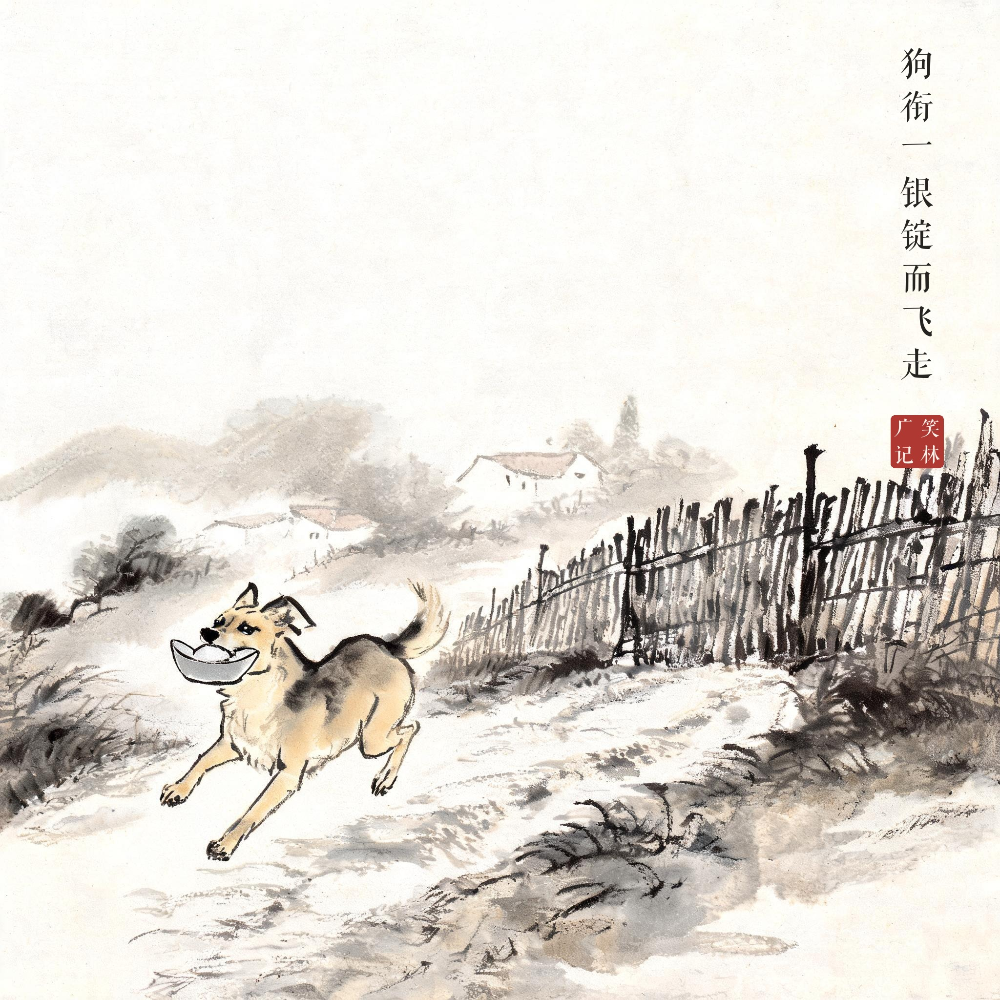
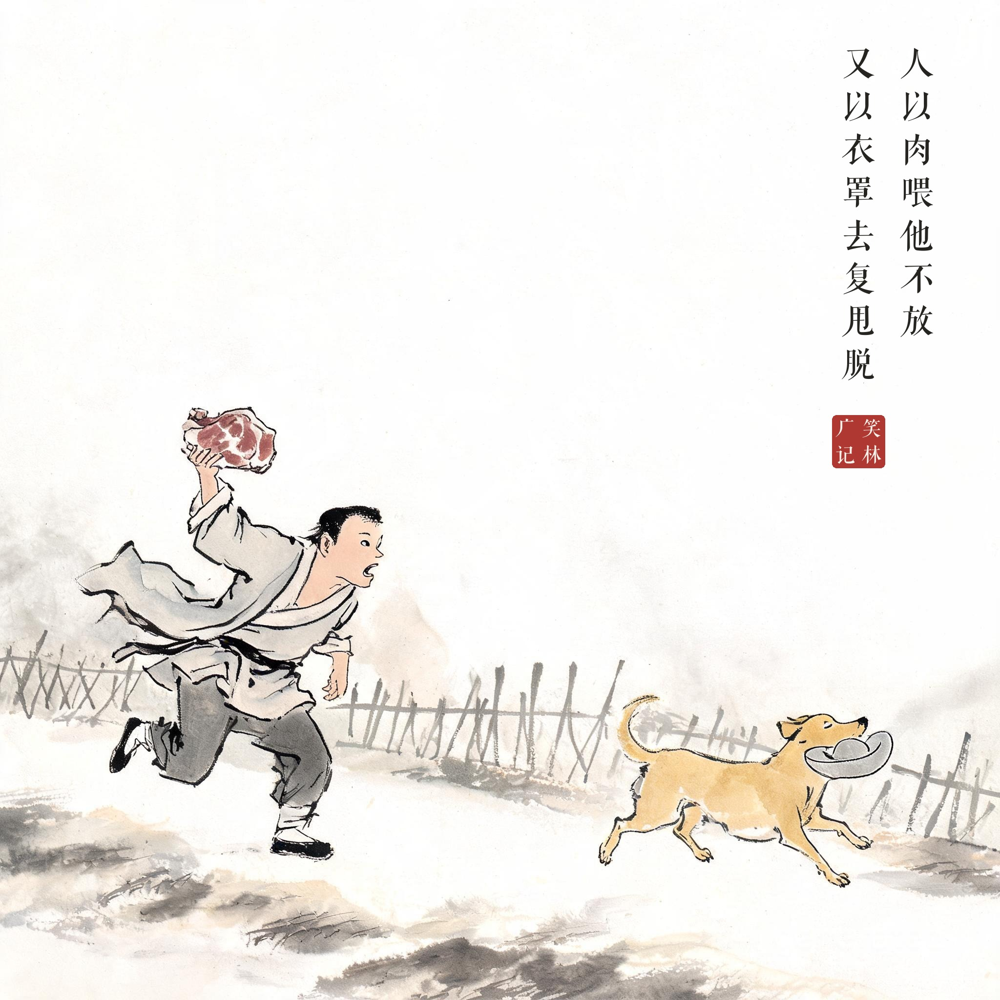
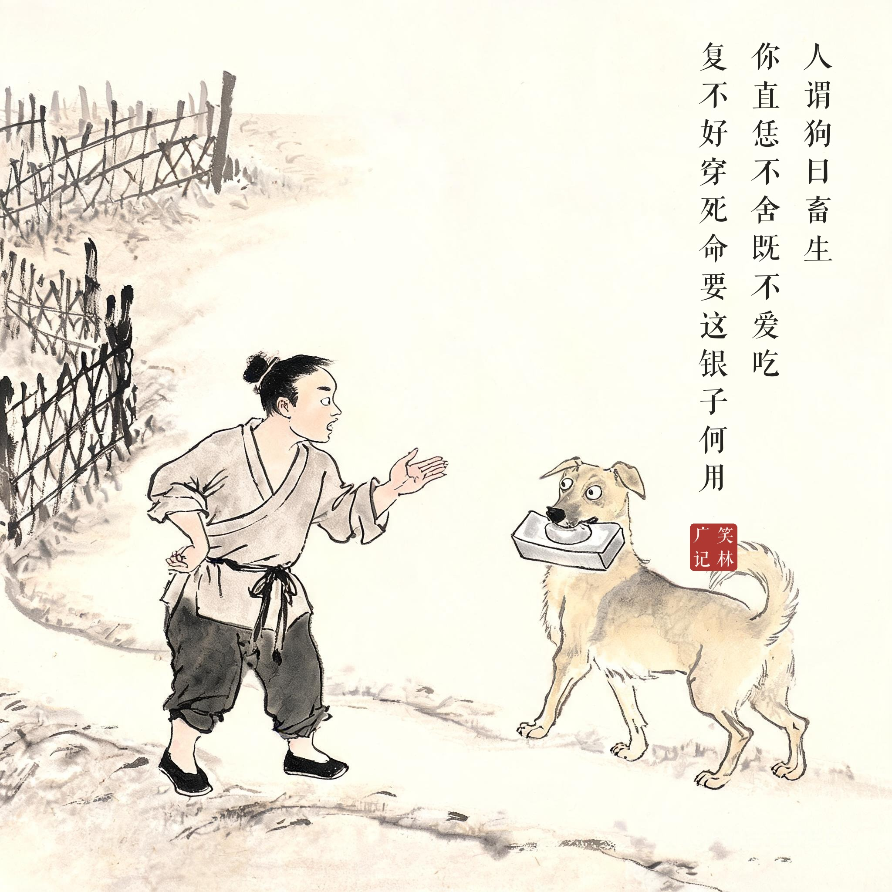

笑林广记 · 笑话组画
19 狗衔锭
系列：笑林广记 · 水墨笑话组画 | 3 幕 | 2K（2048×2048）| aicloud-seedream / 每幕题款＝该幕原文（清刻本悦宋合成，无标点），合幕覆盖全文 | 印章：笑林广记

其01 · 衔锭飞走狗衔一银锭而飞走
黄狗叼银锭撒腿飞奔

其02 · 喂肉罩衣人以肉喂他不放 / 又以衣罩去复甩脱
路人一手举肉一手抖衣追赶，狗咬锭不回头

其03 · 银子何用人谓狗曰畜生 / 你直恁不舍既不爱吃 / 复不好穿死命要这银子何用
路人叉腰摊手质问，狗叼锭回头瞪他
出处
《笑林广记 · 讥刺部》（[清]游戏主人纂集）
原文
狗衔一银锭而飞走，人以肉喂他不放，又以衣罩去，复甩脱。人谓狗曰："畜生，你直恁不舍，既不爱吃，复不好穿，死命要这银子何用？"
白话
一只狗叼着一锭银子飞奔而逃。人拿肉喂它，它不撒口；又拿衣服罩它，它又挣脱了。人对狗说："畜生，你这么舍不得——既然不爱吃，又不好穿，死命要这银子有什么用？"
画意
借狗骂人：不吃不穿，死抱着银子不放手——守财奴画像，狗比人先想不通。